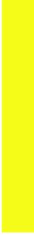
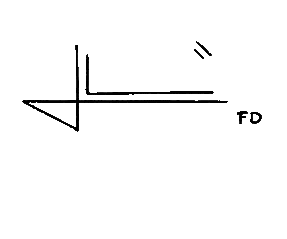

Señores:
Coordinación Operativa
Benemérito Cuerpo de Bomberos Voluntarios
Villamaría – Caldas
Asunto: Reporte de intervención No. {{REPORTE_ID}}
Cordial saludo,
El Benemérito Cuerpo de Bomberos Voluntarios de Villa María se permite presentar el siguiente reporte correspondiente a la atención de evento operativo desarrollado durante la jornada de servicio.
Fecha: {{FECHA}}
Hora Llegada: {{HORA_LLEGADA}}
Hora Final: {{HORA_FINAL}}
Latitud: {{LATITUD}}
Longitud: {{LONGITUD}}
Coordenadas: {{COORDENADAS}}
Lugar del incidente: {{LUGAR}}
Dirección: {{DIRECCION}}
Tipo de evento: {{EVENTO}}
Personal participante: {{PERSONAL}}
Vehículos: {{VEHICULOS}}
Descripción:

Lesionados: {{LESIONADOS}}
Víctimas: {{VICTIMAS}}
Afectados: {{AFECTADOS}}
Novedades:
{{NOVEDADES}}
Firmas Bomberos:
